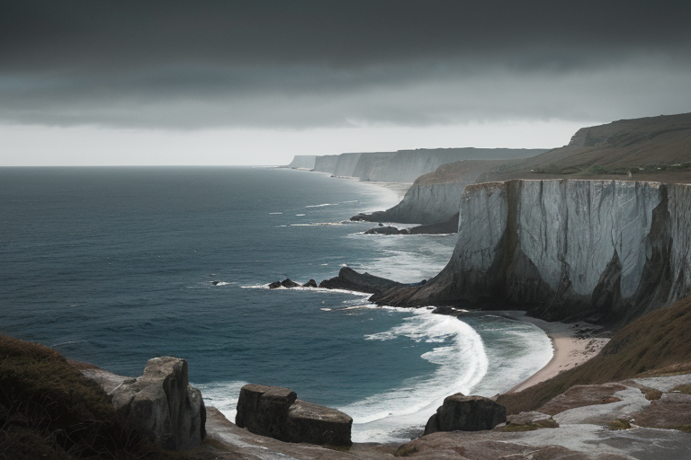
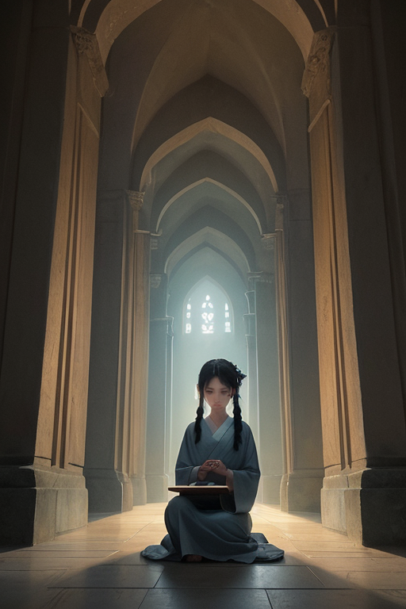
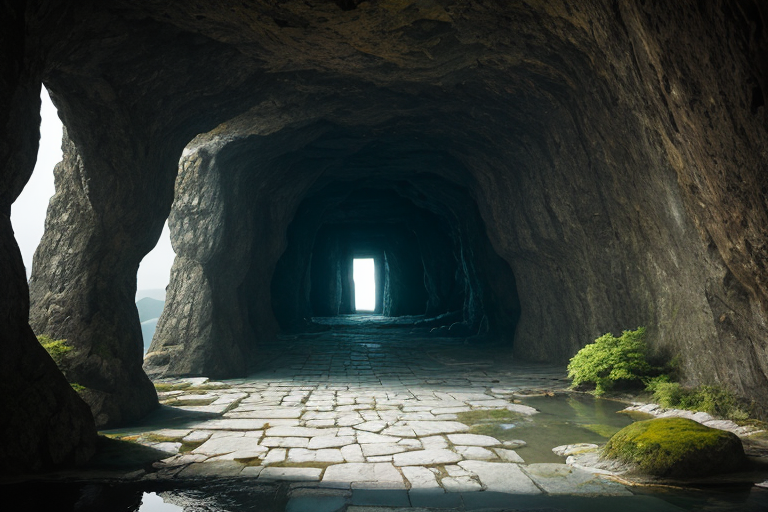
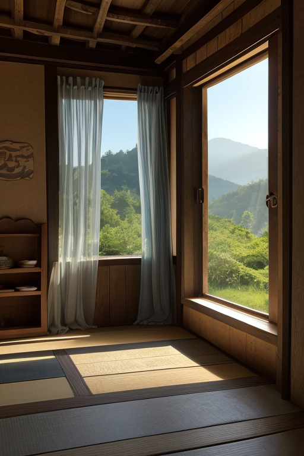
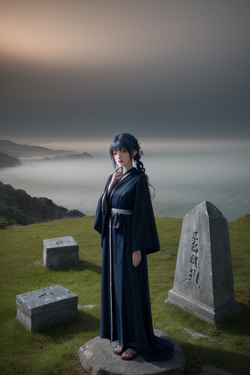

第一章 現実の岩手
あなたはまだ気づいていない。この土地にも、王がいることを。
三陸海岸の断崖、浄土ヶ浜の白い岩肌は、かつての大津波の爪痕を静かに示していた。海と山の境界、この土地は常に「外」からの衝撃と、「内」に蓄積された記憶の狭間にあった。イワティア・ルーンは、墨黒の衣をまとって崖の端に立っていた。彼の目は、青く深い海の彼方、プレートが潜り込む歪みの線を見据えている。彼の役目は、来るべき衝動を一瞬遅らせ、逃げる時間をほんの少しだけ調整することだ。英雄的な救済ではない。ただ、現実をほんのわずか、受け入れやすい角度に傾けるだけの仕事である。
彼の傍らには、主席妖精ルーンティアが、石碑のような佇まいで立っていた。彼女の石の肌には、この土地に伝わる無数の物語が、古文様のように刻まれている。しかし、その多くは語り手を失い、忘却の波に洗われようとしていた。「語られない物語は、消えるのか？」イワティアは内省的なその問いを、潮風に乗せて呟いた。答えはまだ、風の中にあった。

第二章 歪みの兆候
遠野の里を流れる風に、異質な軋みが混じり始めた。観光地化の波は確かな経済の潤いをもたらす一方で、土地の記憶を薄める圧力にもなっていた。座敷わらしの伝承は土産物屋のキャラクターとなり、語り部の高齢化は静かなる忘却を加速させていた。イワティアは、中尊寺金色堂の静謐な空間に立ち、かすかな「歪み」を感じ取る。それは物理的な地殻のそれではなく、人と土地、物語と現実の結び目が緩み、ほつれ始める、目に見えない亀裂だった。
「語られぬ物語は、土地の重みを失います」と、ルーンティアが石の声で告げた。彼女の肌に刻まれた古文様の幾つかが、かすかに霞んでいた。消えゆく物語一つ一つが、この王国の基盤を構成する細やかな糸である。それが失われる時、土地そのもののバランスが微妙に、しかし確実に揺らぐ。次の大きな歪みが来た時、調整の精度が百分の一、千分の一、落ちてしまうかもしれない。王は、南部鉄器のように冷たく硬い現実を見つめた。彼にできるのは、物語を消滅から救うことではない。消えゆくその速度を、ほんの少しだけ遅らせることだけだ。

第三章 王の葛藤
遠野の里を流れる風は、消えゆく物語の残響を運んでくる。座敷わらしの話を語れる古老が、また一人、静かに世を去った。王は、その家の縁側に佇み、かすかに残る「語り」の痕跡を、ルーン文字のように読み取ろうとする。だが、それは砂上の文字のように、すぐに風化していく。
「語られなければ、物語は確かに消えます」
ルーンティアが、冷たい石の声で告げた。彼女の掌には、古老が最後に触れた庭石が載せられていた。石は微かに温もりを保ち、かすかな記憶の断片を内包している。
「しかし、全てを留めることは、この土地の摂理に反します。流れを止めることは、新たな歪みを生むだけです」
王は龍泉洞の深淵を思い出した。あの暗闇も、流れる水の働きで形作られたものだ。全てを保持しようとする固執は、別の停滞を生む。彼の役割は保持ではなく、調整なのだ。消えゆく速度をほんの少し緩め、次の語り手へと渡される「偶然」の確率を、わずかに上げること。それは、あまりに静かで、あまりに儚い営みだった。
彼は目を閉じた。受け入れることと、拒むことの狭間で、王の心は静かに軋んだ。

第四章 妖精との対話
遠野の古い農家で、ルーンティアが一枚の石板を撫でていた。表面には風化しかけた無数の刻み。かつてここに住んだ人々の、日々の些事の記録だ。
「語られない物語は、消えるのでしょうか」
イワティアの問いに、妖精は静かに首を振いた。
「いいえ。消えるのではありません。『土に還る』のです」
彼女の指が刻まれた溝を辿る。
「語られる物語は、風に乗り、人から人へ渡ります。語られなくなった物語は、沈黙し、この土地の匂いや、湿り気や、石の温度となって染み込みます。それは決して無にはなりません。ただ、形を変える。語り手との出会いを、長い長い時をかけて待つのです」
イワティアは、かつて奥州藤原氏が黄金に願いを託したように、人々が「形」に思いを込めることを思った。金色堂も、南部鉄器も、わんこそばの器も。全ては、語りえぬ何かを、別の形で保持しようとする営みだった。
「では、王の役目は？」
「出会いの『間』を調整すること。沈黙が完全な忘却に沈む前に、微かな風を起こすこと。たとえそれが、百年に一度の、かすかなそよ風であっても」
ルーンティアの言葉は、洞窟の滴る水のように、王の心に落ちた。

第五章 微調整と余韻
王は、遠野の古い宿の縁側に座っていた。座敷わらしの噂が残るその家で、語り部の老人が、声にならない声で昔話を紡いでいた。言葉は時折途切れ、沈黙が訪れる。その沈黙が深くなり、物語が完全に闇に飲まれそうになるその寸前、王は微かに息を吹いた。縁側の風鈴が、かすかに鳴る。老人はふと目を上げ、記憶の糸を再び手繰り寄せ、語りを続けた。それは、災害を防ぐような大いなる調整ではない。語り手と聞き手の間を、かすかに繋ぎ留める、ほんのわずかな働きだった。
三陸の海を見下ろす岬で、津波の記憶を語る碑の前を、観光客の家族が通り過ぎようとした。子供が足を止め、石に刻まれた数字を指さす。「これ、何？」父親は答えに詰まる。その一瞬の間、王は潮風をほんの少し強めた。父親は、ふと傍らに置かれた一輪の野花に目を留め、「これはね、とても大切なことを忘れないための印なんだ」と、自分なりの言葉で語り始めた。語られない物語は、形を変え、別の形で受け継がれていく。王はそれを、この土地の無数の「間」で、そっと見守っていた。
あなたの町にも、王がいる。